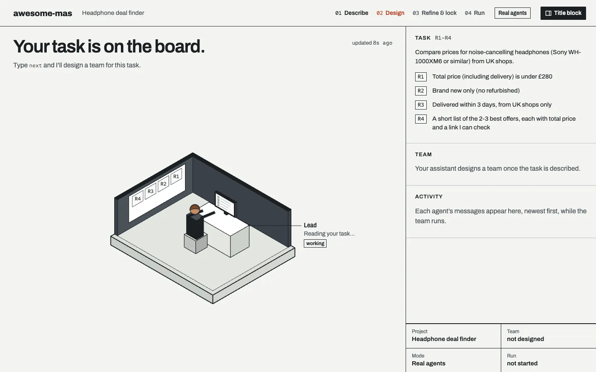
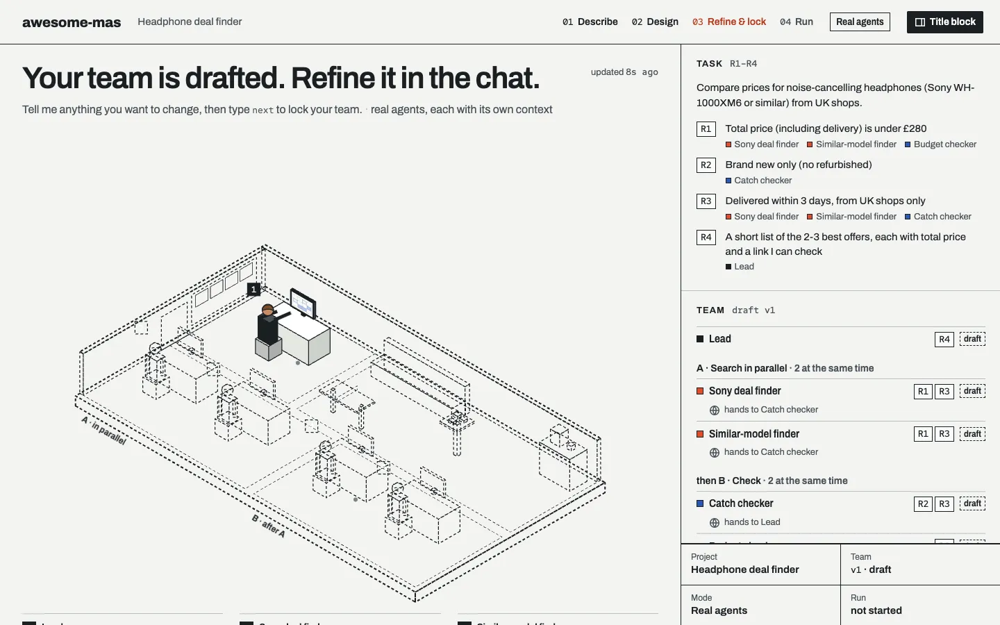
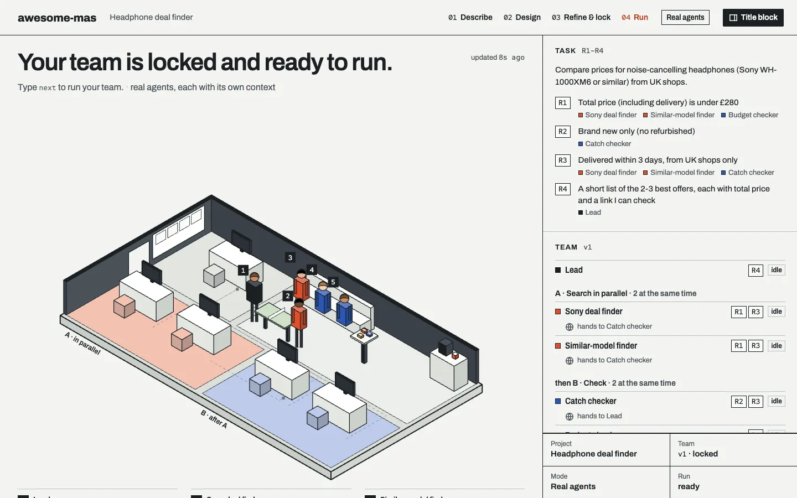
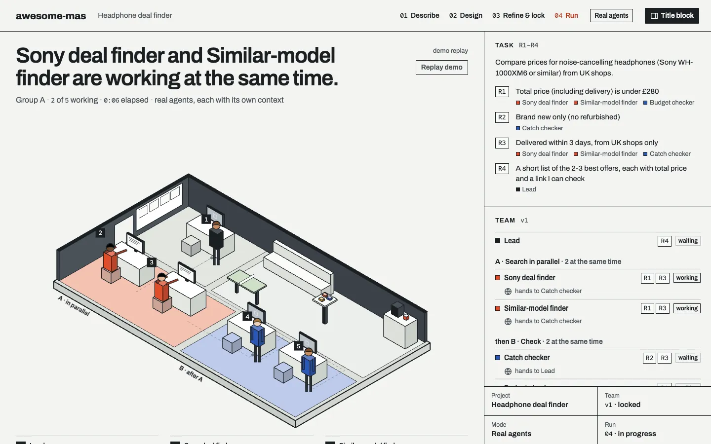

Contents
Before you start
Three things to have ready
- An AI coding assistant, signed in. Claude (the desktop app or Claude Code), Codex (the app or the CLI), Antigravity (the IDE or the CLI), or a similar assistant that can read and write files in a folder. Most need a paid plan. Your normal chat website is not enough: it cannot keep files.
- A task you genuinely want help with. Comparing prices before a purchase, planning a trip, checking whether a thesis idea is feasible, finding a flat, planning meals, preparing job applications. Anything works, as long as you can say what a good answer looks like.
- A browser for the live panel. Any modern browser. There is nothing to click or connect in it; it only shows what your team is doing.
A full run uses a real share of your plan's usage, because every agent reads and writes on its own. Keep your first team small: a Lead plus 2–4 agents.
Part A · do this once
Set up your folder
- You type
- One sentence
- Time
- About 5–10 min
- You approve
- A download and file edits
- Ends with
- “Type
next…”
One folder can later hold several MAS, so you set it up only once. Everything your team writes stays in this folder, as plain files you can open.
A1 · Make an empty folder
Make a new, empty folder somewhere easy to find, for example my-mas on your Desktop. Empty matters: your assistant will not touch files that are already there.
A2 · Open the folder in your AI tool
Pick your tool. Your choice is remembered next time you open this page.
- Install the Claude desktop app and sign in.
- Open the Code tab, choose Open folder… and pick your empty folder.
- If the app asks whether you trust this folder, choose trust. Without it, the folder's own settings don't apply and every file edit asks for permission.
- During setup, approve when it asks to download files or to edit files in this folder.
Tip: once setup has run, click office/index.html in the chat to open the panel in the app's browser pane, right next to your conversation.
- Install Claude Code (instructions) and sign in.
- Open a terminal in your empty folder and type
claude, then press Enter. - When it asks whether you trust this folder, choose Yes, I trust this folder. Without it, the folder's own settings don't apply and every file edit asks for permission.
- During setup, approve the one download command when asked.
Claude Code runs your agents as real parallel subagents: two finders really work at the same time.
- Install the Codex app (instructions) and sign in.
- Open your empty folder as a project.
- If Codex says it can't download (its sandbox may block the internet for commands), use the ZIP route at the end of A3, then type
next.
- Install Codex CLI (instructions) and sign in.
- Open a terminal in your empty folder and type
codex --search. The--searchpart gives live web results; without it Codex uses cached results. - If the download is blocked, approve network access when asked, or use the ZIP route at the end of A3.
Codex runs your agents as real parallel subagents.
- Install Antigravity and sign in.
- IDE: Open Folder and pick your empty folder. CLI: open a terminal in the folder and type
agy. - Allow it to edit files in this folder when asked (or start the CLI in a mode that accepts file edits).
Setup tests whether Antigravity can start subagents here. If it can't, your assistant plays each role in turn: slower, and the panel says so, but the steps and the office are the same.
- Open your empty folder in your AI coding assistant (Cursor, Copilot, Gemini CLI, opencode…).
- Allow it to edit files in this folder and to search the web.
- If it doesn't follow the steps on its own later, start each conversation with
Read AGENTS.md and follow it.
A3 · Paste the setup sentence
It is the same sentence for every tool. Paste it into your assistant and press Enter.
Can't download from inside your tool? Get the ZIP, unzip it, move everything inside awesome-mas-main into your folder, open the folder in your tool and type next.
A4 · Let your assistant set things up
You don't need to do anything here except approve. Your assistant explains each step in one sentence while it:
- downloads awesome-mas into your folder (you approve once);
- writes a small file to check it can save files;
- runs one tiny web search to check it can search;
- starts one tiny test agent to check whether it can run agents at the same time, and tells you honestly: real agents or role-play;
- opens the live panel,
office/index.html, in your browser.
Welcome to awesome-mas. … This folder can hold several MAS, one folder each. Keep office/index.html open: it follows whichever MAS we work on.
Type next to start your first MAS.
A5 · Put the chat and the panel side by side
From now on you talk in your assistant and watch the panel. Put the chat on the left half of your screen and the panel on the right. The panel updates by itself; if it ever looks stuck, reload the page.
Part B · once per MAS
Name your MAS
Type next. Before step 1, your assistant asks what to call this MAS. A few words are enough; it becomes a folder with that name inside your project folder.
What should we call your new MAS? A few words are enough, e.g. headphone deals.
MAS: headphone-deals
Type next to describe your task.
Every new conversation in this folder starts the same way: your assistant lists your MAS and asks whether to start a new one or continue one. Each reply then begins with a line like MAS: headphone-deals, so you always know which one you are in.
Step 1 of 4
Describe your task
- You type
next, then 5 answers- Time
- About 10–15 min
- You get
- Requirements R1, R2…
- Ingredient
- Memory
Type next. Your assistant interviews you with five questions, one at a time, and waits for each answer. Answer in your own words, in any language. The example answers below are from the real price-comparison example in your folder.
- Q1
What should your assistant help you do?
Say the task in one or two sentences.
ExampleCompare prices before I buy noise-cancelling headphones (Sony WH-1000XM6 or similar).
- Q2
What are your preferences and limits?
Budget, time, things to avoid. Numbers help: they become checkable requirements.
ExampleUnder £280 total including delivery, must be brand new (not refurbished), delivered within 3 days, UK shops only.
- Q3
What does a good result look like? How will you judge it?
The shape of the answer you want to receive.
ExampleA short list of the 2–3 best offers with total price and links I can check.
- Q4
Will you do this again? How often?
This tells your assistant whether a reusable team is worth it.
ExampleYes, I'll use it again for a monitor next month.
- Q5
Do you have your own material for it?
Notes, a reading list, a brief. If yes, it tells you which
raw/folder to put the files in; your agents read them but never change them.ExampleNo.
If an answer is unclear, your assistant may ask one short follow-up. That is still step 1.
You'll see
Your assistant turns your answers into requirements: short, checkable lines that everything later is measured against.
Your requirements:
- R1Total price (including delivery) is under £280
- R2Brand new only (no refurbished)
- R3Delivered within 3 days, from UK shops only
- R4A short list of the 2–3 best offers, each with total price and a link I can check
Type next to design your team.

Check before moving on
- Each requirement is something you actually said. If one is wrong, just say so: “R2 should be ‘new or open-box’”.
- Each one can be checked. “Cheap” is hard to check; “under £280 including delivery” is easy.
A chat can't do thisMemory
Close the conversation and start a new one in the same folder. Your assistant lists your MAS and picks this one up from me/task.md. A web chat forgets when you close it; your task now lives in a file.
Step 2 of 4
Let it design a team
- You type
next- Time
- About 2 min, then read
- You get
- A draft team
- Ingredient
- Division of labour
Type next. Your assistant derives a team from your requirements: a Lead who writes the final answer, plus a few roles. A new role only exists for a reason: a different source or expertise, work that can run at the same time, an independent check, or combining results.
You'll see
A small table in the chat. This is the team from the price-comparison example:
| Role | Serves | Why it exists | Group |
|---|---|---|---|
| Sony deal finder | R1 R3 | Searches UK shops for the exact model | A |
| Similar-model finder | R1 R3 | A different source: similar headphones, at the same time | A |
| Catch checker | R2 R3 | An independent check for refurbished stock and slow delivery | B |
| Budget checker | R1 | An independent check of every total, delivery included | B |
These run at the same time: the two finders (group A), then the two checkers (group B).
Cost: 5 agents ≈ 5× the tokens of one assistant.
Change anything by telling me, and the panel shows the updated team. When you're happy, type next to lock.

Read it like a designer
- Every requirement is served by at least one role.
- You can say in one sentence why each role exists.
- You know which roles run at the same time, and who checks whom.
A chat can't do thisDivision of labour
Your task became a team you can point at: each role traces back to your own words, and the checkers are separate from the finders they check.
Step 3 of 4
Refine the team, then lock it
- You type
- Changes in words, then
nextand yes - Time
- About 10–20 min
- You get
- One job file per agent
- Ingredient
- Your decision
This is the step where you decide. Ask for as many changes as you like, one message each, in plain words. Your assistant updates the team, tells you the effect on speed, cost and coverage, and the blueprint in the panel changes with it.
Things you can say
- “Add a budget checker that re-checks every total.”
- “Merge the two finders into one.” (cheaper, but no longer at the same time)
- “The catch checker should also check the seller is in the UK.”
- “Remove the similar-model finder; I only want the Sony.”
- “Why do we need two checkers?” (questions are fine too)
Push back on every extra agent: more agents means more tokens and more time. If a change leaves a requirement unserved, your assistant tells you, but the choice stays yours.
Lock it
Happy with your team? I'll lock it.
Your team is locked: each role now has a desk in the office panel. Open one file in team/ and read it: this file is the agent, its whole job description.
Type next to run your team.

Do open one of the files in team/ (for example team/catch-checker.md). It is short: the job, the tools, the rules and the output it must produce. Nothing else makes that agent.
A chat can't do thisYour decision
You designed the structure, and you can see its price: the team, who checks whom, and how many agents you are paying for.
Step 4 of 4
Run it and watch
- You type
next, then wait- Time
- About 3–8 min
- You get
- A result with sources
- Ingredients
- Tools, workflow
Type next. Your assistant tells you honestly how the agents will run: separate subagents, each with its own context (group A at the same time), or role-play, where it plays each role in turn. Then the team starts, group by group. You don't need to type anything until it says the result is ready.
What to watch in the panel
- The big sentence at the top says what is happening right now, e.g. two finders working at the same time.
- Each person sits at a desk and types; the line next to them says what they are doing and how far along they are.
- Hand-offs: when a finder is done, it carries a sheet of paper along the dashed line to the checker.
- Flags: an agent that finds a problem stands up and raises a hand, with a yellow warning, e.g. “Refurbished: breaks R2”.
- Click a person to follow only their thread; everything else dims. Click again to go back.

When it's done
Your assistant gives you the answer in a few lines and points to outputs/result.md. The panel shows the same result on the right, every source with a link you can open, and an evidence grade from A (you can buy or run it) to D (opinion). The team gathers for a short celebration.
- Open two or three sources and check a claim yourself.
- Look at what the checkers caught: that is what a single chat would have missed.
- Click a person to read their own work summary.
A chat can't do thisTools · workflow
Agents worked at the same time, a checker caught what a finder missed, and every claim links to a source you can open. Next time, one line repeats the whole process.
After the run
Run it again, change the team, or start another
| You want to | Do this |
|---|---|
| Run with a new condition | Change it in me/task.md (e.g. the budget), then type run again. The old result is kept as result-run1.md. |
| Change the team | Type unlock, ask for changes, then next to lock it again. |
| Start another MAS | Type new and give it a name. Both MAS stay in the same folder. |
| Go back to another MAS | Say e.g. “switch to lisbon trip”. The panel follows. |
| Continue another day | Open the folder in your tool and say anything. Your assistant lists your MAS and asks which one. |
What's in your folder now
my-mas/
office/index.html the live panel (open it in a browser)
home/ what your tool can do, and the list of your MAS
headphone-deals/ one folder per MAS:
me/ your task, in your words
mas/ the team's structure and live status
team/ one job description per agent
sources/ every web source your agents used
outputs/ the result (result.md), and each agent's own work
raw/ your own files for the agents to read (optional)
examples/ three finished examples: double-click examples/index.html
AGENTS.md, harness/ the instructions your assistant follows
Cheat sheet
Words you can type
| Type | What happens |
|---|---|
next | Do the next step: describe, design, lock, run. |
| a change in your own words | Change the team before it is locked, e.g. “add a budget checker”. |
run again | Run the whole team again. |
unlock | Change a locked team. |
new | Start another MAS in the same folder. |
| switch to … | Continue another MAS. |
Read AGENTS.md and follow it. | Get your assistant back on track if it forgets the steps. |
Troubleshooting
If something goes wrong
The setup sentence fails: it can't download.
Use the ZIP: download it from the link in A3, unzip it, move everything inside awesome-mas-main into your folder, then open the folder in your tool and type next.
Every file edit asks me for permission.
Your tool doesn't trust the folder yet. In Claude Code or the Claude app, restart it in this folder and choose to trust it. In other tools, choose the mode that accepts file edits in this folder.
The panel doesn't update.
Reload the browser page. Make sure you opened the office/index.html inside your project folder, not a copy somewhere else.
My assistant doesn't follow the steps.
Type Read AGENTS.md and follow it. and then next.
It says role-play instead of real agents.
Your tool can't start separate agents here, so your assistant plays each role in turn. The steps and the office are the same; it just takes longer, and the panel says so honestly.
An agent says a web page wouldn't open.
Some sites block automated readers. Your agents are told to say so and use another source instead of guessing. If an important source is missing, open it yourself and check.
The run takes too long.
Say “finish with what you have”. Next time, use a smaller team (type unlock, merge or remove roles).
I ran out of usage.
Your files are safe; continue when your usage resets. Meanwhile, double-click examples/index.html to watch finished example teams and read their results.
The idea
Why a team of agents instead of one chat?
Each step shows you one ingredient a single chat window doesn't have.
| Ingredient | Where you saw it | What it means |
|---|---|---|
| Memory | Step 1 | Your task lives in files, so closing the chat loses nothing. |
| Division of labour | Steps 2 and 4 | Specialists work at the same time, and checkers catch what finders miss. |
| Tools | Step 4 | Agents search the web and save every source, so you can check each claim. |
| Workflow | After the run | run again repeats the whole process in one line. |
More agents also means more tokens. The panel shows the trade-off, and the choice is yours.